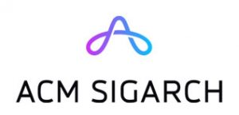

Program
Saturday, October 8, 2022
Tutorial: Memory-Centric Computing
- Onur Mutlu (ETH Zurich)
Tutorial: Boosting Productivity and Applications Performance on Parallel Distributed Systems with the SHAD C++ Library
- Vito Giovanni Castellana (Pacific Northwest National Laboratory, Richland, WA)
- Marco Minutoli (Pacific Northwest National Laboratory, Richland, WA)
- John Feo (Pacific Northwest National Laboratory, Richland, WA)
Tutorial: NVMExplorer: A Framework for Cross-Stack Comparisons of Embedded Non-Volatile Memory Solutions
- Lilian Pentecost (Harvard)
- Alexander Hankin (Harvard)
- Marco Donato (Harvard)
- Mark Hempstead (Harvard)
- Gu-Yeon Wei (Harvard)
- David Brooks (Harvard)
Sunday, October 9, 2022
Workshop: NextPIM --- Evolution of PIM for Next-Generation Computing
- Karthik Swaminathan (IBM Research)
- Saransh Gupta (IBM Research)
- Vijaykrishnan Narayanan (Penn State University)
See the workshop page for more information.
Tutorial: SODA Synthesizer: Accelerating Data Science Applications with an end-to-end Silicon Compiler
- Nicolas Bohm Agostini
- Serena Curzel
- Michele Fiorito
- Vito Giovanni Castellana
- Fabrizio Ferrandi
- Antonino Tumeo
Tutorial: SYCL for heterogenous computing: updates, experience, and feedback
- Zheming Jin (ORNL)
Monday, October 10, 2022
Keynote: Closing the Gap between Quantum Algorithms and Machines with Hardware-Software Co-Design
Fred Chong (Department of Computer Science, University of Chicago, Chicago, IL)
Quantum computing is at an inflection point, where 127-qubit machines are deployed, and 1000-qubit machines are perhaps only a few years away. These machines have the potential to fundamentally change our concept of what is computable and demonstrate practical applications in areas such as quantum chemistry, optimization, and quantum simulation. Yet a significant resource gap remains between practical quantum algorithms and real machines. A promising approach to closing this gap is to design software that is aware of the key physical properties of emerging quantum technologies. I will illustrate this approach with some of our recent work that focuses on techniques that break traditional abstractions and inform hardware design, including compiling programs directly to analog control pulses, computing with ternary quantum bits, 2.5D architectures for surface codes, and exploiting long-distance communication and tolerating atom loss in neutral-atom machines.
Fred Chong is the Seymour Goodman Professor in the Department of Computer Science at the University of Chicago and the Chief Scientist for Quantum Software at ColdQuanta. He is also Lead Principal Investigator for the EPiQC Project (Enabling Practical-scale Quantum Computing), an NSF Expedition in Computing. Chong is a member of the National Quantum Advisory Committee (NQIAC) which provides advice to the President and Secretary of Energy on the National Quantum Initiative Program. In 2020, he co-founded Super.tech, a quantum software company, which was acquired by ColdQuanta in 2022. Chong received his Ph.D. from MIT in 1996 and was a faculty member and Chancellor's fellow at UC Davis from 1997-2005. He was also a Professor of Computer Science, Director of Computer Engineering, and Director of the Greenscale Center for Energy-Efficient Computing at UCSB from 2005-2015. He is a recipient of the NSF CAREER award, the Intel Outstanding Researcher Award, and 13 best paper awards.
(Other talks to be announced)
Tuesday, October 11, 2022
Keynote: MemComputing: Fundamentals and Applications
Massimiliano Di Ventra (Department of Physics, University of California San Diego, La Jolla, CA)
MemComputing is a new physics-based approach to computation that employs time non-locality (memory) to both process and store information on the same physical location. (M. Di Ventra, MemComputing: Fundamentals and Applications, Oxford University Press, 2022.) Its digital version is designed to solve combinatorial optimization problems. A practical realization of digital memcomputing machines (DMMs) can be accomplished via circuits of non-linear dynamical systems with memory engineered so that periodic orbits and chaos can be avoided. A given logic (or algebraic) problem is first mapped into this type of dynamical system whose point attractors represent the solutions of the original problem. A DMM then finds the solution via a succession of elementary avalanches (instantons) whose role is to eliminate configurations of logical inconsistency ("logical defects") from the circuit. I will discuss the physics behind MemComputing and show many examples of its applicability to various combinatorial optimization problems, Machine Learning, and Quantum Mechanics, demonstrating its advantages over traditional approaches and even quantum computing. Work supported by DARPA, DOE, NSF, CMRR, and MemComputing, Inc.
Massimiliano Di Ventra obtained his undergraduate degree in Physics summa cum laude from the University of Trieste (Italy) in 1991 and did his PhD studies at the Swiss Federal Institute of Technology in Lausanne in 1993-1997. He is now professor of Physics at the University of California, San Diego. Di Ventra's research interests are in condensed-matter theory and unconventional computing. He has been invited to deliver more than 300 talks worldwide on these topics. He has published more than 200 papers in refereed journals, 4 textbooks, and has 7 granted patents (3 foreign). He is a fellow of the IEEE, the American Physical Society, the Institute of Physics, and a foreign member of Academia Europaea. In 2018 he was named Highly Cited Researcher by Clarivate Analytics, he is the recipient of the 2020 Feynman Prize for theory in Nanotechnology, and is a 2022 IEEE Nanotechnology Council Distinguished Lecturer. He is the co-founder of MemComputing, Inc.

(Other talks to be announced)
Wednesday, October 12, 2022
Keynote: AI Acceleration: Co-optimizing Algorithms, Hardware, and Software
Vijayalakshmi Srinivasan (IBM Research, Yorktown Heights, NY)
The combination of growth in compute capabilities and availability of large datasets has led to a re-birth of deep learning. Deep Neural Networks (DNNs) have become state-of-the-art in a variety of machine learning tasks spanning domains across vision, speech, and machine translation. Deep Learning (DL) achieves high accuracy in these tasks at the expense of 100s of ExaOps of computation. Hardware specialization and acceleration is a key enabler to improve operational efficiency of DNNs, in turn requiring synergistic cross-layer design across algorithms, hardware, and software.
In this talk I will present this holistic approach adopted in the design of a multi-TOPs AI hardware accelerator. Key advances in the AI algorithm/application-level exploiting approximate computing techniques enable deriving low-precision DNNs models that maintain the same level of accuracy. Hardware performance-aware design space exploration is critical during compilation to map DNNs with diverse computational characteristics systematically and optimally while preserving familiar programming and user interfaces. The opportunities to co-optimize the algorithms, hardware, and the software provides the roadmap to continue to deliver superior performance over the next decade.
Viji Srinivasan is a Distinguished Research Staff Member and a manager of the accelerator architectures and compilers group at the IBM T.J. Watson Research Center in Yorktown Heights. At IBM, she has worked on various aspects of data management including energy-efficient processor designs, microarchitecture of the memory hierarchies of large-scale servers, cache coherence management of symmetric multiprocessors, accelerators for data analytics applications and more recently end-to-end accelerator solutions for AI. Many of her research contributions have been incorporated into IBM's Power and System-z Enterprise-class servers.

Important Dates and Deadlines
Conference Papers:
Abstracts: April 18, 2022Full Papers: April 25, 2022Round 1 Rebuttal: June 6–9, 2022Round 2 Rebuttal: July 11–14, 2022Author Notification: July 29, 2022- Camera Ready Papers: August 26, 2022
Posters:
- Poster Submission Deadline: September 1, 2022
- Author Notification: September 15, 2022
- Extended Abstract: September 29, 2022
- Poster Session: October 10, 2022
ACM Student Research Competition:
- Abstract Submission Deadline: September 1, 2022
- Author Notification: September 15, 2022
- SRC Poster Session: October 11, 2022
- SRC Finalist Presentations: October 12, 2022
Workshops and Tutorials:
- Workshops/Tutorials: October 8–9, 2022
Conference: October 10–12, 2022
Previous PACTs
- PACT21 (proceedings)
- PACT20 (proceedings)
- PACT19 (proceedings)
- PACT18 (proceedings)
- PACT17 (proceedings)
- PACT16 (proceedings),
- PACT15 (proceedings)
- PACT14 (proceedings)
Earlier PACTs
Sponsors
Gold

Supporters



Academic

Supported by Argonne National Laboratory.